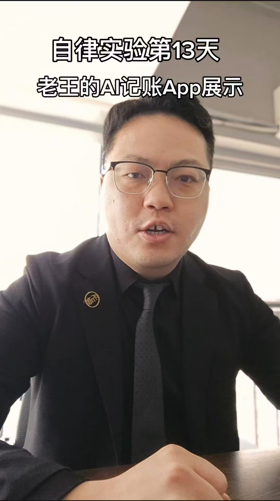
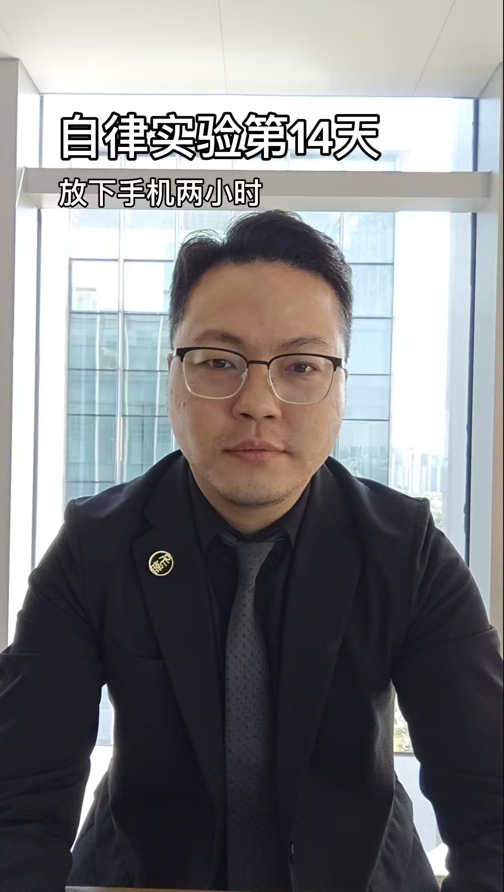

不只是发现问题，而是提供可执行的盈利模型。针对收益管理、成本管控、用户体验进行全盘复盘与调优，直击利润痛点。
将 GM 经验转化为算法效率。依托前沿 AI 工具构建自动化运营架构，打造高效的数据看板与差评处理体系，极简管理流程。
借助《酒店之王》IP 与成熟矩阵，协助品牌打破流量圈层。提供职场故事赋能与品牌曝光策略，实现商业价值跨界破局。
这是我在一线管理中跑通的底层 Prompt。从高情商的 OTA 差评自动反转，到 RevPAR 数据洗盘分析模型。直接复制，即刻将团队效率提升 300%。
挑战极度自律，探讨行为如何重塑人生。在这里记录我每天的思考、体能训练与 AI 实践。

我做了一件90%的人都觉得不可能的事情 (点击跳转观看)

放下手机2个小时，我才真正“看见”我老婆 (点击跳转观看)
结合今天酒店的RevPAR，聊聊成本管控模型。
《酒店之王》番茄小说断更危机及克服方式。
碳水循环与酒店自助餐的诱惑对抗。
如何用飞书多维表格抓取数据并自动分类。
疲劳期来临，意志力与物理疲惫的对抗。
海南民族酒店协会会议，关于行业未来的三点共识。
商业的本质是人性的映射，这里是我在管理与写作中的思想碎片。
点击卡片右下角即可保存文字，随时温故而知新。
当成果可以被“看见”，行动力会显著提升。
大多数管理者的平庸，在于把“执行力”等同于“不假思索地重复”。真正的执行力，是在看清成本结构后，敢于重塑规则的破局力。